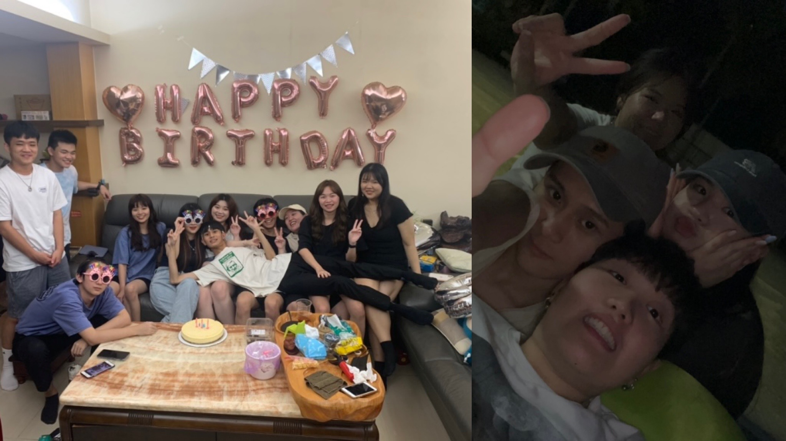
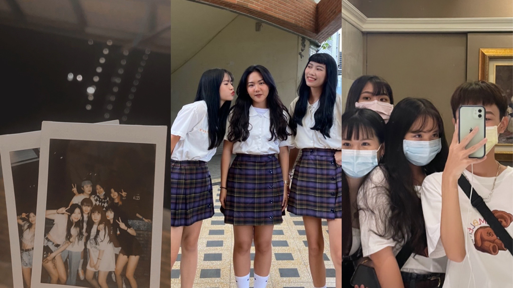
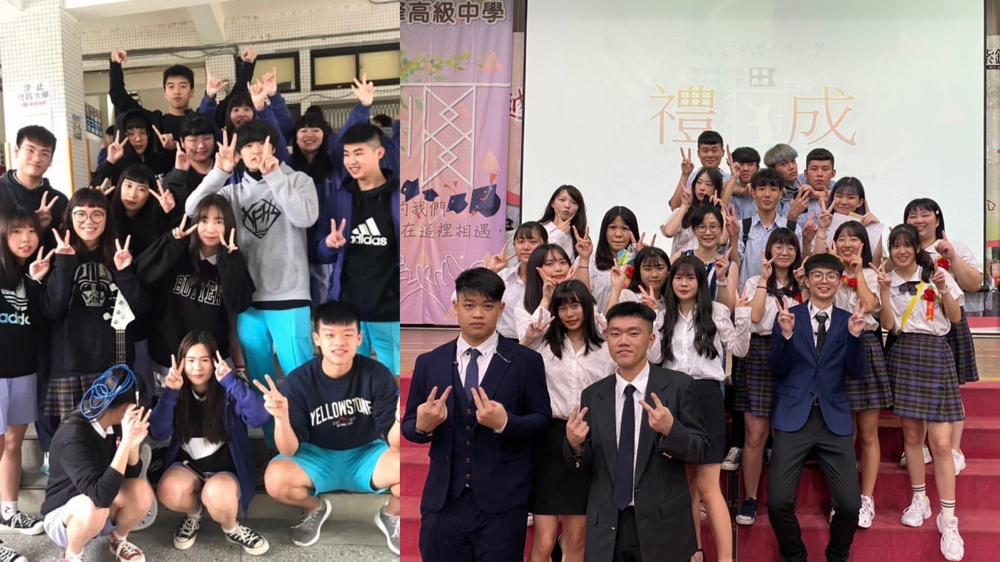
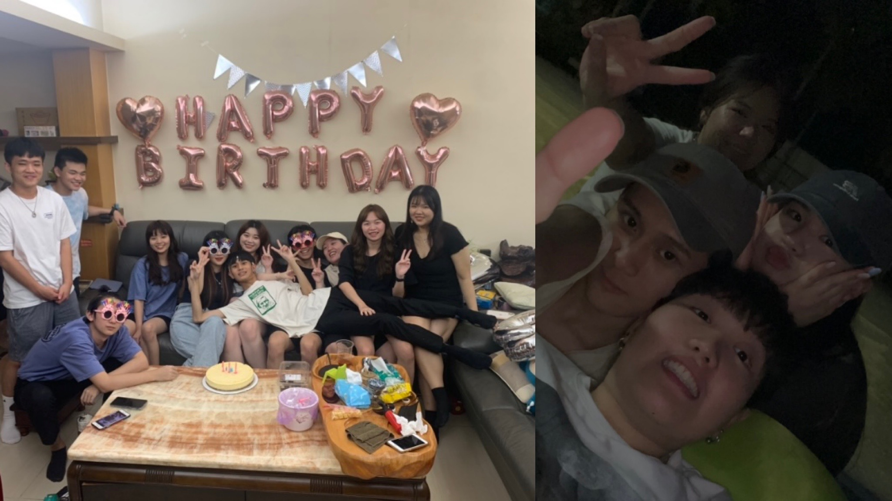
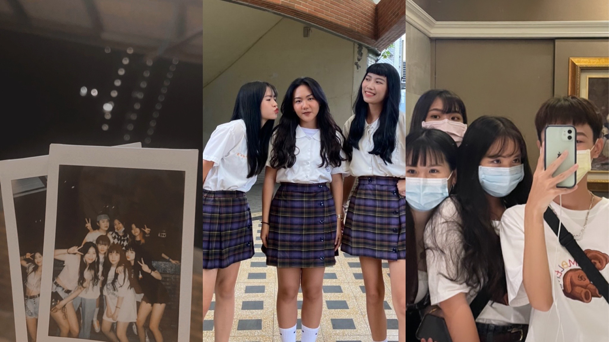
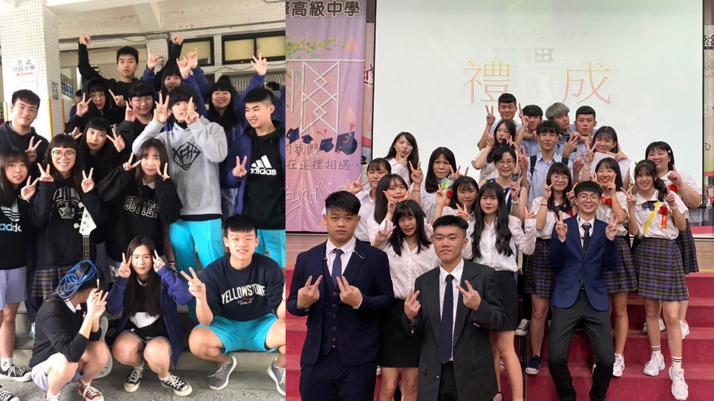

小的時候在景美大家庭住了10年，就讀景興國小，在仙跡岩入口的小山坡上，小學的我是一個很開朗活潑的人，一直以來都跟同儕很要好，也非常吵鬧，所以順其自然的交了很多好朋友，搬家之後轉學，去到一個陌生的環境，一開始不太適應，雖然到後面也融入的很好，而兩所學校的共通點就是環境都很棒，在第二所小學，認識了一輩子的好朋友，可能是緣分使然，互相看對眼的那一刻就一直牽絆到現在,或許也是住的近很容易維持感情，細數我們也陪對方走過了8年的歲月，國中唸的是家裡附近的明湖國中，其實交友圈跟國小非常相像，基本上可以說是接近重疊，國中的我是最廣交朋友的時期，不論後來有沒有聯絡，那時的我擁有很多人的陪伴，是認識很多人但卻沒有深交的時期，當然也有很多交情非常深的人，就像那時候因緣際會認識了一大群非常好朋友,是我的補習班同學，想了想我交朋友真的不需要什麼原因或是什麼理由，對我來說真的就是緣分將我們牢牢地牽在一起，或許也是物以類聚，自然而然的就成為朋友,雖然是補習班讓我們走到了一起，但我們都不愛唸書，喜歡玩樂，完完整整的玩樂了三年，我們瘋狂而且大膽，雖然現在想起來有點沒羞恥心，我們很莽撞，常常跟別人吵架，雖然很衝動，但人生或許只有那時有機會可以不經大腦的做任何事情，現在想起來還是很懷念那時候，可以說是18年來最最最快樂的時光，雖然後來有些朋友走了不同的路，但留下來的人卻越珍貴，我們一群人就這樣一起成長，走到了現在，一起面對很多大大小小的事情，不論傷心難過或是好笑的，我們都扎扎實實的一起度過了從魯莽到成熟的歲月，從國中走到了大學，不論何時何處，我們卻永遠都是初次玩在一起時的模樣，就好像家人一樣，不會為了小事情走心，真心地為所有對方值得慶祝事開心，所有的脾氣都不需要壓抑，我們常說會不會80歲的我們還是這樣，雖然這就像是脫口而出的玩笑，但我們心裡都知道:「一定會的吧!」因為彼此的存在，在那個懵懂無知卻有自己心思的年紀，我有了最想珍惜的關係。
會考結束後的我不知道自己想做什麼，所以我選擇讀普通高中，再給自己三年思考，於是我考上了新北市立秀峰高中，是間校風不太好，當然成績門檻也偏低的學校，開學的時候導師就跟我們說，這間學校是秀峰快樂高中，結果也真的很快樂，從國中就對高中生活很嚮往，期待著那種青春熱血沸騰的感覺，一上高中就加入了熱音社跟學生會，認識了很多好朋友，辦了很多活動，學習到了很多很多東西，從來沒有面對過真正的壓力和挫折的我，第一次體驗到當你成為學長姐玩社團跟學生會不光只是是玩而已，是要負起責任還有團隊合作的地方，要付出很多的時間跟金錢，人在團隊合作中不能光做自己愛做的事，那些大大小小的幹部名稱也並不是包裝高中生活的裝飾品，而是你要扛在肩膀上一整年的責任心，那些現在看起來沒什麼大不了的小事，對那時候力不從心的我們卻是很大的難關，不論是順利解決的困難，還是那些須將就和放棄的選擇，都是高中那些瑣碎日常不可或缺的每一筆，雖然中間遇到很多失望的時候，無能為力的日子，但平凡美好的回憶也仍然在心中的小角落，還好結局是很棒的，我不後悔自己那時的選擇，而這當中我最大的收穫之一是我充分了解了我自己，認識了自己的專長，喜歡與不喜歡的事，釐清了那些我以為的自己，我認為當時的我並不知道真實的自己是個什麼樣的人，包括自己的優點和缺點，還有別人眼中的我又是個什麼樣的人。
在高中我的人際關係依舊很不錯雖然不太像國小或國中依樣到處交朋友,卻也認識了不少真心相伴的朋友，也是我以後會一直想珍惜的人們，我們一起度過了浪漫的青春歲月。直至高中結束我的求學過程都少不了朋友的陪伴，而且我也充分意識到自己有多麼重視朋友們的存在，是他們豐富了我本來不怎麼精彩的生活，高中三年有兩年半都在玩樂的我，最後選擇了指考，給自己多一點時間唸書，於是離開景美8年後，18歲的我，選擇再回到小時候成長，最熟悉的地方唸大學，現在就讀世新大學資訊傳播學系，大學生活的篇章正在開始，大學的我已經不像小時候這麼熱衷於社交，我選擇把更多時間留給自己還有家人，對我來說我已經擁有太多人的愛，但還是很幸運大學可以有幾個很和的來的同學，我也相信我們會一直要好，總而言之除了通勤很疲勞之外，到目前為止的大學生活都很不錯。
 




